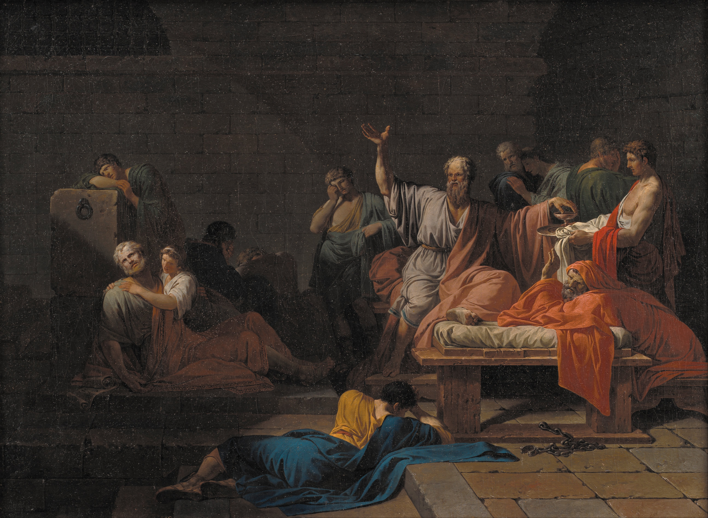

I / V · Athens, 399 BCE
The paradox
of democracy.
A democracy condemns its questioner.
Scroll to enter the exhibitionII / V · Collective injustice
A verdict
is not justice.
Can the will of the many justify the death of one?
“law and justice”Plato, Apology 32b–c

III / V · Demagoguery
Freedom can
undo freedom.
Popular power, unchecked, can empower a tyrant.
“excess of liberty” … “excess of slavery”Plato, Republic 564a
IV / V · Majority tyranny
When dissent
falls silent.
One voice is punished. Others may fear to speak.
“the tyranny of the prevailing opinion and feeling”John Stuart Mill, On Liberty, ch. 1


V / V · The legacy
Socrates dies.
The question remains.
Can democracy endure without protecting those who challenge it?
Liberty requires limits on power.Return to the beginning ↑